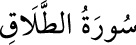

<a name=9663></a><br/>
<b>65- et-TALÂK SÛRESİ</b><br/>
<i><b>“Talâk”, boşama anlamına gelir. </b></i><br/>
<i><b>Sûre boşama konusunu ihtivâ ettiği için bu ismi almıştır. </b></i><br/>
<i><b>Medine’de inmiştir. 12 âyettir.</b></i><br/>
